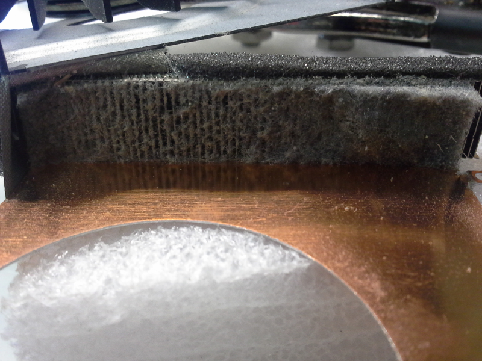

Through the years we have seen many computers on our workbenches that were running slower and warmer than normal. They had no outward signs that below the surface, deep inside of the computer cooling fan and cooling fins lay the cause of the increased heat and reduced performance. In the slideshow below you can see the worst of the worst of what could be lurking inside of your computer if you do not bring it in to have regular maintenance and cleaning service done.


